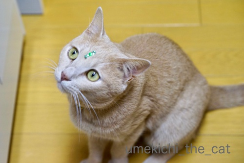
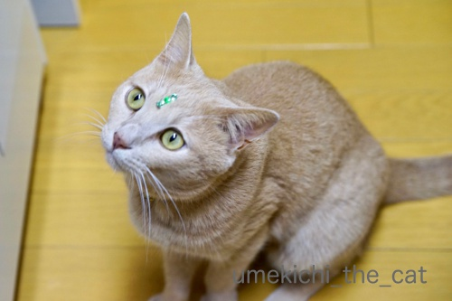

ゴロゴロ音が拾えました！ [梅吉]
･゜ﾟ･*:.｡..｡.:*･゜ﾟ･*:.｡. .｡.:*･゜ﾟ･*･゜ﾟ･*:.｡..｡.:*･゜ﾟ･*:.｡..｡.:*･゜ﾟ･*

引き続きのお願いです。猫を探しています。
不明になったのは今年１月頃と見られていますが不確定です。
それ以前の可能性もあります。★拡散希望★兄弟猫脱走【千葉県我孫子市】
保護主のぽちさんと協力してくださっている方々が懸命に探しています。
情報がありましたらコメント欄でも結構です。お知らせくださいませm(_ _)m
･゜ﾟ･*:.｡..｡.:*･゜ﾟ･*:.｡. .｡.:*･゜ﾟ･*･゜ﾟ･*:.｡..｡.:*･゜ﾟ･*:.｡..｡.:*･゜ﾟ･*

梅吉さんの額に何かが！
それはビンディー？
はたまた第三の目が開眼しましたか！？
グリーンのキラキラ第3の目の正体は一体何かというと・・・

私、先日、また一つ大人になりましたw
ブーケを買ってもらったらラッピング素材や花材にキラキラしたシールが貼ってあったのです。
こういうのを見るとうずうずしちゃうんですよねぇ(〃▽〃)
迷わず梅吉の額に置いちゃいましたよ。

額の中央からちょっとずれちゃったけど・・・
なかなかお似合いですよー＾＾
いつか録音したいと思っていた梅吉のいびきとゴロゴロ音。
音声アプリを使ってゴロゴロ音の収録に成功！
（動画で拾うのはやっぱり難しいみたい・・・）
（13秒です＾＾）
静止画に音をはめ込みました。
ボーダーTはおっとの腕枕です。
梅吉と添い寝気分をお楽しみくださいＯ(≧▽≦)Ｏ
ちなみに使用したのはこのアプリです。
 ↑ガブッと一押し↑
↑ガブッと一押し↑
低予算で話題の映画「カメラを止めるな！」を観てきました。
「ホラー映画でしょ？」「ゾンビ映画でしょ？」と敬遠している方もいらっしゃると思いますが
その手の映画ではありません。
でもこれ以上は言えません、ぐぬぬぬぬぬ・・・・
あまり予備知識なしに映画館で観ていただきたい映画です。
冒頭の30分は正直全然面白くありません。家で観てたら途中で止めてたかも。
（なので映画館で観てね。）
しかもハンディカムのブレブレ映像なのでじーっと観てたら軽く胸がムカムカしてきて・・・
乗り物酔いだってしたことないのに(⌒_⌒;
（後半の大笑いですっかり良くなりましたけど）
しかーし！このつまんない冒頭の30分がのちに劇的に昇華（笑）していきます。
笑いすぎて涙出ました。
高尚な笑いじゃありませんよ。肩肘張らないおバカな笑いです。
まだまだ暑い夏を笑って乗り切りたい方、笑って元気を出したい方にオススメです！
この映画、リピーターも多くて冒頭からゲラゲラ笑う方もいるみたい。
ぜんぜん面白くない場面に笑うから気になって集中できなかったというレビューも見ました。
リピーターの方は我慢してこっそり肩を揺らしましょうね＾＾
私はビデオ配信になったらもう一度家で冒頭から笑いながら観たいと思います。
映画の後は「鉄板ナポリタン」。
昭和の喫茶店チックなチープさが良いんですよねー。ワインが進みました。

引き続きのお願いです。猫を探しています。
不明になったのは今年１月頃と見られていますが不確定です。
それ以前の可能性もあります。★拡散希望★兄弟猫脱走【千葉県我孫子市】
保護主のぽちさんと協力してくださっている方々が懸命に探しています。
情報がありましたらコメント欄でも結構です。お知らせくださいませm(_ _)m
･゜ﾟ･*:.｡..｡.:*･゜ﾟ･*:.｡. .｡.:*･゜ﾟ･*･゜ﾟ･*:.｡..｡.:*･゜ﾟ･*:.｡..｡.:*･゜ﾟ･*

梅吉さんの額に何かが！
それはビンディー？
はたまた第三の目が開眼しましたか！？
グリーンのキラキラ第3の目の正体は一体何かというと・・・
私、先日、また一つ大人になりましたw
ブーケを買ってもらったらラッピング素材や花材にキラキラしたシールが貼ってあったのです。
こういうのを見るとうずうずしちゃうんですよねぇ(〃▽〃)
迷わず梅吉の額に置いちゃいましたよ。
額の中央からちょっとずれちゃったけど・・・
なかなかお似合いですよー＾＾
いつか録音したいと思っていた梅吉のいびきとゴロゴロ音。
音声アプリを使ってゴロゴロ音の収録に成功！
（動画で拾うのはやっぱり難しいみたい・・・）
（13秒です＾＾）
静止画に音をはめ込みました。
ボーダーTはおっとの腕枕です。
梅吉と添い寝気分をお楽しみくださいＯ(≧▽≦)Ｏ
ちなみに使用したのはこのアプリです。
低予算で話題の映画「カメラを止めるな！」を観てきました。
「ホラー映画でしょ？」「ゾンビ映画でしょ？」と敬遠している方もいらっしゃると思いますが
その手の映画ではありません。
でもこれ以上は言えません、ぐぬぬぬぬぬ・・・・
あまり予備知識なしに映画館で観ていただきたい映画です。
冒頭の30分は正直全然面白くありません。家で観てたら途中で止めてたかも。
（なので映画館で観てね。）
しかもハンディカムのブレブレ映像なのでじーっと観てたら軽く胸がムカムカしてきて・・・
乗り物酔いだってしたことないのに(⌒_⌒;
（後半の大笑いですっかり良くなりましたけど）
しかーし！このつまんない冒頭の30分がのちに劇的に昇華（笑）していきます。
笑いすぎて涙出ました。
高尚な笑いじゃありませんよ。肩肘張らないおバカな笑いです。
まだまだ暑い夏を笑って乗り切りたい方、笑って元気を出したい方にオススメです！
この映画、リピーターも多くて冒頭からゲラゲラ笑う方もいるみたい。
ぜんぜん面白くない場面に笑うから気になって集中できなかったというレビューも見ました。
リピーターの方は我慢してこっそり肩を揺らしましょうね＾＾
私はビデオ配信になったらもう一度家で冒頭から笑いながら観たいと思います。
映画の後は「鉄板ナポリタン」。
昭和の喫茶店チックなチープさが良いんですよねー。ワインが進みました。

カフェオレ色の梅吉

梅吉 2023年8月10日 永眠


梅吉と出会った譲渡会

犬猫の理由なき殺処分ゼロ
妄想広告
UMEKICHI 光

爆発的に早い！
時々攻撃的！
Thanks to Mr.Boss365
爆発的に早い！
時々攻撃的！
Thanks to Mr.Boss365

ゴロゴロ音が聴きたくて、猫さんに耳をあてる毎日です。
この音を聴くと安心します(^^)
by riverwalk (2018-08-23 00:31)
ちぃさんお誕生日おめでとうございます。(過ぎちゃってるみたいだけど)毎年とっても素敵なお花をもらえていいわねー。
ゴロゴロ音はず~っと聞いていたくなります。
by zombiekong (2018-08-23 00:45)
ゴロゴロ音！初めて聞いたときはビックリしました！
Ｌｅａのブリーダーさんはにゃんこさんも
扱っているのですが
Ｌｅａを迎えに行ったときにゴロゴロ音が鳴り続けて
携帯のバイブ音が鳴ってる！！って思ったほどでした（笑
そして遅くなりましたがお誕生日おめでとぉ～ございます(*´ω｀*)
by きぃ (2018-08-23 06:08)
いびきもゴロゴロも
人の耳には良く聞こえるのに
録音するとなると難しいですね＾＾；
by ぽちの輔 (2018-08-23 06:53)
本当だ！ゴロゴロきゃわいい！
by ニコニコファイト (2018-08-23 07:10)
遅ればせながら、お誕生日おめでとうございます＼(^o^)／
どこか高貴に見える梅吉様、いびきもお上品かと(〃'∇'〃)
by middrinn (2018-08-23 07:38)
お誕生日おめでとうございます＾＾
ゴロゴロ音を聞くと癒されますよねぇ=(^.^)=
私はノエルに腰ポンポンしてる時と
大御所を抱っこしながらかみさんの側に行った時に
たまにかすかに聞かせてもらえます♪( ´▽｀)
でもかみさんがナデナデしてる時の４ニャンズは
離れていても聞こえるくらいのゴロゴロ音です(ｰ ｰ;)
by ニッキー (2018-08-23 08:06)
こういう音声、かなり貴重かもっ！
流石ですねー！
そして話題のこの映画、かなり見たいです。
流行ものはチェックしておきたいミーハーな私(^_^;)
by よーちゃん (2018-08-23 08:45)
ちぃさん、お誕生日おめでとう♪
素敵なブーケは旦那様から？いいな～。私なんてもらったことないよ～。
ちぃさんは素敵な奥様なんだろうな♪
梅吉くんのゴロゴロも幸せそう(*^-^*)ゴロゴロを聞くと優しい気持ちになる。
私は家の子たちがゴロゴロいうと、一緒にハミングすることがあるよ。
たまに間違えて歌っちゃうけどｗハミングってゴロゴロっぽくない？(≧▽≦)
by emi (2018-08-23 10:14)
おはようございます。
ちぃさん！！誕生日おめでとう御座います！！（⌒ー⌒）
ゴロゴロ音良いですね！！都市伝説ですが・・・
「骨折の治癒スピードを上げる効果」「人間のストレスも低下させる」と言われてます。人間の人体に良い効果があるみたです！！梅吉君のゴロゴロ音は大きく個性的なので、長寿効果があるかもしれません？腕枕のご主人！！若返ったかも？
「鉄板ナポリタン」は危険ですね！？(=^･ｪ･^=)
by Boss365 (2018-08-23 10:44)
お誕生日おめでとうございます！！
ブーケが貰えるなんて、なんて素敵なっ
うちの相方君にもこの記事を見せなくちゃ(笑)
このアプリダウンロードしてみる。
ゴロゴロ音拾いたい^^
今は会社で観てるから音が出せないけど、家に帰って梅吉君のゴロゴロ聞くぅぅぅ！
映画、気になるじゃない(笑)
by リュカ (2018-08-23 10:50)
梅吉王子、高貴なエメラルド色が似合ってるー♪
寝息＆ゴロゴロ、安心しきっているからこその、幸せの音色なのね。よかったね！
映画→鉄板ナポ→ワイン ええコースやなあ～。。。
by Ginger (2018-08-23 11:36)
お誕生日おめでとうございます٩(^‿^)۶
ゆづはゴロゴロ言わないんです。
真冬に婆のお布団に潜り込んだ時、
極々たまにゴロゴロ言いますが…。
小さい頃にお母さんと離されて
幼少期はワンコさんと過ごしたので
ゴロゴロを習っていないのかなぁ…と思ったりします。
by も〜 (2018-08-23 13:45)
インスタ見て梅吉さんおでこに何がついているんだろう？？と思ってたらコレでしたか！
お誕生日おめでとうおございます＼(^o^)／
ダーリンから花束プレゼントって素敵すぎます♪
ウチは花より酒、だめだ～(≧▽≦)
梅吉さん、幸せのゴロゴロ大放出中^^
何だか肩こりが治ってきたような気がします！
こてつはゴロゴロというよりブゥブゥ。子豚みたいです。
by ゆきち (2018-08-23 15:48)
お誕生日お目出度うございます！
梅吉さん、ゴロゴロいびきをかいているのですね！
お顔のシールも可愛いですね(^^)
by ma2ma2 (2018-08-23 17:27)
お誕生日おめでとうございます。
立派なゴロゴロ音ですね。
いびき？かくことあるんですか？
by nachic (2018-08-23 18:04)
お誕生日だったんですね～おめでとうございます。
梅吉さん、ビンディーでお祝い？
ゴロゴロ音、なごみます～＾＾
音が二重に響いてますね＾＾
鉄板ナポリタン、美味しそう！
うみちゃん、そらちゃん、消息わかるといいですね。元気でいてくれますように＾＾
by sana (2018-08-23 20:21)
お誕生日おめでとうございます。
花束、素敵です。
梅吉さん、ゴロゴロ、大奮発ですね。
大きな音量で聞いてビックリでした（笑）
グリーンのキラキラ、オシャレについてます。
『カメラを止めるな』300万円の制作費が、
約2億円の興行収入になろうとしてるとか。
素朴なナポリタンって、時々食べたくなりますが、40年は食べてないかも〜
滅多に風の音がしない我が家ですが、
少し前から風の音がひどくなって空気がざわついています。
ちぃさん地域大丈夫ですか？
by kiki (2018-08-23 21:54)
お誕生日おめでとうございます！
ゴロゴロ音、お見事ですね。聴き入ってしまいました。^o^)
映画館で映画鑑賞、もう何年も行っておりません。^^;
by yes_hama (2018-08-23 22:05)
お誕生日おめでとうございます！
ゴロゴロ音も個性それぞれ♡
梅さまはお花ムシャムシャ・・・はしないのでしょうか・・・^^;
この映画、最近ぱくりだなんだで話題のやつですかね。
（ホラーだったんだ^^;）
事実はわかりませんが、人気が出るといちいち大変ですよね(｡-_-｡)
by Ja-Kou66 (2018-08-24 00:03)
おめでとです～＾＾*ﾟ｡+(n´v`n)+｡ﾟ*
！！３番目の目！
飛影！……（時代によっては…）みつめがとおる！
なにか能力目覚めるかも！ｗｗ
映画はアレですよねｗ今なんか揉めているｗ例の…ｗ
面白いみたいですねぇ＾＾
ナポリタンは、、猫毬的には、まさにコレです＾＾。
少し焦げてるくらいがすき♪
by 猫毬 (2018-08-24 00:11)
riverwalkさん＞
もちろんユキちゃんのゴロゴロですよねー＾＾
耳を当てられたら嬉しくてゴロゴロしちゃうのでしょうか。
お二人、本当に仲良しですね！
zombiekongさん＞
お祝いのお言葉ありがとうございます！
来年も素敵なお花をもらえるように精進したいと思いますw
ゴロゴロ音は気持ちの良い音ですが
夜中に枕元でされると眠れない・・・(⌒_⌒;
で、「ちょっとー、もうゴロゴロは良いから。」
なんて声をかけると更にゴロゴロ・・・
なんてことがよくありますwww
きぃさん＞
Leaちゃんのブリーダーさんちのにゃんこさん
なかなかのゴロゴロ音の持ち主のようですねー。
でも知人宅のにゃんこも負けてませんよ。
車のアイドリングかと思うくらい大音量のゴロゴロでしたw
私が人生で聞いた中で一番大きなゴロゴロ音でした＾＾
ぽちの輔さん＞
ゴロゴロ音よりもいびきが更に難関で・・・
このアプリを入れてからまだいびきをかいていないのですが
（梅吉のいびきは冬しか聞いたことありません）
うまく拾えるかなぁ・・・
iPhoneでは無理でしたw
ニコニコファイトさん＞
可愛いでしょー＾＾
実際はもっと可愛いんですよー！
middrinnさん＞
お祝いのお言葉ありがとございます＾＾
あら(〃▽〃)高貴だなんてー！
いつかアップされるであろう
ノーブルでソフィスティケイトされたいびきを
楽しみにしていてくださいね！！
ニッキーさん＞
お祝いのお言葉ありがとうございます＾＾
４にゃんさんはゴッドマザー様に見つめられただけで
ゴロゴロ言っちゃいそうですものね。
ナデナデなら爆音のゴロゴロになっていそう(≧▽≦)
でもゴッドマザー様の側とはいえ
ニッキーさんに抱っこされていても
大御所様がゴロゴロ言うのはちょっと意外でしたw
（ごめんなさいwww）
よーちゃん＞
映画、よーちゃんなら絶対楽しめると思います！
ぜひぜひー。
行きたい日時にチケット取るのがなかなか大変なので
早めの予約をお勧めしまーす＾＾
emiさん＞
お祝いのお言葉ありがとうございます＾＾
おっと、素敵な奥様疑惑www
そうありたいとは思いますがなかなかねぇぇぇぇー
まずは来年もお花を送ってもらえるように
頑張るとしますかw
ゴロゴロと一緒にハミング？
今度やってみるー！けど結構低音なので出来るかな・・・
Boss365さん＞
お祝いのお言葉ありがとうございます＾＾
ゴロゴロ音は治癒のスピードアップ？ストレス低下？？
なんだか美容にも効きそうな気がしてきましたよ！
私は寿命は伸びなくても良いから
老化を遅らせる＆若返り効果に期待したいでーすＯ(≧▽≦)Ｏ
よーし！梅吉をいっぱいゴロゴロ言わせちゃおう！！
リュカさん＞
改めまして、お祝いのお言葉ありがとうございます＾＾
我がおっと、
年に二回お友達ブロガーの夫の方々を敵に回しているような気もしますが
嬉しいからブログの記事にしちゃいます。
啓蒙活動にもなるかもしれないしw
梅吉のゴロゴロ、ブルブルとかブチブチに近いでしょ＾＾
にゃんこによってきっと違うはずなので
ぜひ２にゃんさんとの違いを楽しんでねー。
映画、好ましくない話題でもニュースになってるみたいだから
そのうち（世の中が）ネタバレしちゃうかもwww
Gingerさん＞
安心しきっているときは目があっただけで
ゴロゴロ言うときがありますよー。
そんなときは私もリラックスしている時だから
梅吉もちゃんと人間の波長を読み取っているのかも＾＾
ワイン、進みすぎないようにセーブしましたwww
も〜さん＞
王子、ワンコさんに育てられましたか？( ´艸｀)
だから誰にでもフレンドリーなのかもしれませんね！
そういえば知人のうちのワンコは幼少期を猫と過ごしたのですが
やたらスリスリしてくる子でした。
幼児期の刷り込みって種族を超えるんでしょうか(≧▽≦)
ゆきちさん＞
お祝いのお言葉ありがとうございます＾＾
いえいえ、お酒も素敵なプレゼントです！！
二人で一緒に楽しめるし。
にゃんこのゴロゴロ、若返り効果も期待できるとか！？
こてつくんのブゥブゥを聞いて若返ってみたいでーす(≧▽≦)
ma2ma2さん＞
お祝いのお言葉ありがとうございます＾＾
いびきはまた違う音色（笑）なんですよー。
梅吉のいびきは「ぷーすか」いってますw
ゴロゴロ音より録音は難易度高いです・・・
nachicさん＞
お祝いのお言葉ありがとうございます＾＾
いびき、かくんですよー。
「ぷーすか」だったり「ぐごごごごごご」だったり。
初めはおっとのいびきかと思ったくらいですwww
sanaさん＞
お祝いのお言葉ありがとうございます＾＾
ゴロゴロ音は、確かに倍音でよく響きますよねー。
人間の気持ち良い周波数でもあるのでしょうか
聞いていると治癒効果？若返り効果？があるとか！？
鉄板ナポリタン、sanaさんのよく行かれる大戸屋さんにも
登場しないかな・・・
そら＆うみちゃんは、
私も元気な姿を見ないと気が済まなくなってきました。
本当に早く見つかって欲しいです。
kikiさん＞
お祝いのお言葉ありがとうございます＾＾
結婚記念日は家族みんなのお花ですが
今回は私だけのお花でーす。
梅吉にも楽しんでもらいましたけどw
梅吉のゴロゴロ音、『音量注意！』と書くのを
すっかり忘れていました(^_^;)
台風２０号、大阪市内は何事もなく通り過ぎて行きましたね。
低気圧に変わって北海道を襲いそうなので心配です。
この時期はジャガイモ、玉ねぎの大切な成育期なので
やられちゃたら北海道大打撃です。
yes_hamaさん＞
お祝いのお言葉ありがとうございます＾＾
ゴロゴロ音、どうぞエンドレスで聞いてください！
治癒効果、若返り効果もあるとか！？
映画、最近はビデオ配信されるのも早くなったので
ちょっと待てば家でも楽しみにしていた作品は見られますよね。
物によっては家で見たい作品もあるし＾＾
Ja-Kou66さん＞
お祝いのお言葉ありがとうございます＾＾
ゴロゴロ音もにゃんこぞれぞれですよね！
みなさんのおうちのにゃんこのゴロゴロ音を
それぞれ聞いてみたいな、なんて思ったりして。
おおお、映画、好ましくな方面でも話題になっていたのですね。
物語のプロットなんてシェイクスピアの頃に出尽くして
後はちょっとずつひねったり時代のエッセンスを
加えるくらいしか出来ないんじゃないかと思っているのですが・・・
（なのでシェイクスピア以降はみんなパクリw)
事実半分、やっかみ半分！？
でも楽しめましたよー。
猫毬さん＞
みつめがとおる、ありましたね！
見たことないけどwww
梅吉の第三の目には
人間を下僕として操る能力が宿っているようです(*>艸<)
映画、揉めてるの知りませんでした。
でもあーゆー業界はやったもの勝ちの様な気もしますけど・・・
もしも、大物監督があの映画作っていたら
揉めることもなかったかもしれないしー。
いや、でもとっても楽しめましたよ。
おばちゃん、シワが増えるのも気にせず大笑いました(≧▽≦)
ナポリタン、焦げ目付いてましたよ！
でも鉄板がジューって言ってなかったのがちょっと残念。
卵をジューってしたかったのに！！
by ちぃ (2018-08-25 15:33)
大変遅ればせながら、お誕生日
おめでとうございます(@^▽^@)！
映画、ご覧になりましたか！
ゾンビメイクをしていくと「ゾンビ割」、
リピーターは「生き返り割」が使える
映画館もありますが、最初から笑うの
は御法度ですね。青白い足が出てくる
のとか「ポン！」とか、可笑しくて。。
（これならOKかな～？）次の御記事の
手足が長い梅吉さん、ソファーでウインク
しているみたいなの、キュートです♡
by うりくま (2018-08-26 14:19)
うりくまさん＞
お祝いのお言葉ありがとうございます＾＾
「ゾンビ割」に「リピーター割」いいですねー。
ゾンビ割はコスプレーヤーに大人気！？若かったら私もやってたかもwww
青白足は「は？」って感じだったんですが
勝手に「見つからなかったんだな」って意味付けしてました。
「ポン！」はねー、痴漢に襲われたら是非やりたい。（あ、これOKよね）
痴漢の気配がしたら「きたきたきたー！！」ってニヤニヤしちゃって
危ないおばさん、と襲われなくて済むかもしれません。
（そもそもおばさんは痴漢にあわないか(≧▽≦)）
映画、パクリ疑惑とかも浮上している様ですね。
注目を浴びると足も引っ張られちゃう見本になってもいる。。。
by ちぃ (2018-08-26 17:21)